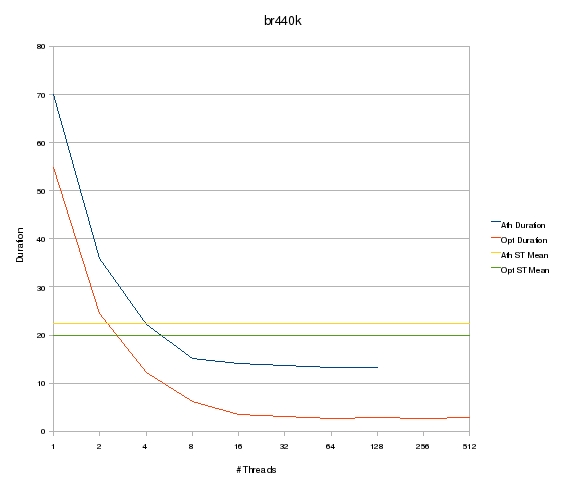
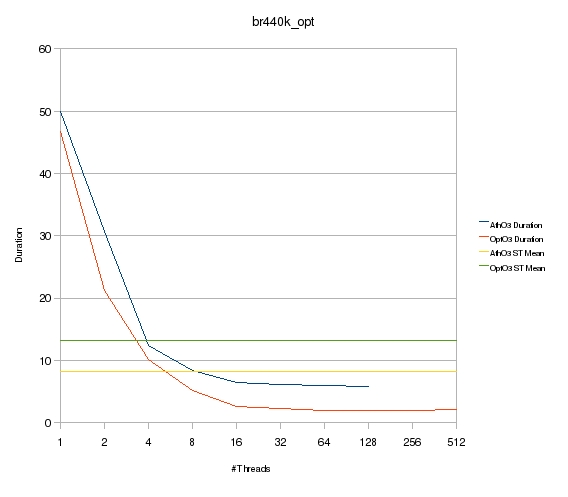

| Download version | TBA |
| Download licence | BSD |
| Trad4 version | TBA |
| Author | schevans |
| Date | 17-05-2009 |
- Locally compiled
- Record calc-stage time only
- Single user
- flush
- CS
The hosts are summarised below.
| Host | Athlon | Opteron |
| Model | 64 X2 Dual Core 4800+ | Quad-Core Opteron 2354 |
| CPU GHz* | 2.4 | 2.1 |
| Cores | 2 | 8 |
| Dies | 1 | 2 |
| OS Arch | i686 | x86_64 |
| Kernel | 2.6.22-15-generic | 2.6.27-7-server |
| Compiler | gcc 4.1.3 | gcc 4.3.2 |
| Num Threads | Athlon Time | Opteron Time |
| 1 | 70.05 | 54.82 |
| 2 | 35.83 | 24.59 |
| 4 | 22.13 | 12.12 |
| 8 | 15.06 | 6.11 |
| 16 | 14.15 | 3.51 |
| 32 | 13.66 | 2.99 |
| 64 | 13.3 | 2.73 |
| 128 | 13.2 | 2.8 |
| 256 | 2.74 | |
| 512 | 2.87 |

| Num Cores | Athlon Time | Opteron Time |
| 1 | 49.98 | 46.79 |
| 2 | 30.68 | 21.24 |
| 4 | 12.37 | 10.13 |
| 8 | 8.37 | 5.19 |
| 16 | 6.52 | 2.66 |
| 32 | 6.17 | 2.25 |
| 64 | 6.01 | 1.92 |
| 128 | 5.85 | 1.91 |
| 256 | 1.94 | |
| 512 | 2.08 |

| Num Threads | Opteron Time | Opteron CS |
| 1 | 46.79 | 105.75 |
| 2 | 21.24 | 55.69 |
| 4 | 10.13 | 30.76 |
| 8 | 5.19 | 16.94 |
| 16 | 2.66 | 11.13 |
| 32 | 2.25 | 9.2 |
| 64 | 1.92 | 8.89 |
| 128 | 1.91 | 10.01 |
| 256 | 1.94 | 13.63 |
| 512 | 2.08 | 23.78 |